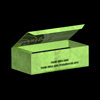
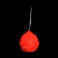

Im folgenden sind die Sammelobjekte und Gegenstände aufgeführt, die in den Klassenräumen verwendet werden können:
 Taschenlampe
Taschenlampe
Jakes wiederaufladbare Taschenlampe ist verfügbar von Anfang an und muss nicht aufgesammelt werden um verwendet zu werden. Die Taschenlampe kann verwendet werden, um Licht überall in den Raum zu bringen und Lichtquellen oder Sammelobjekte zu finden. Da Jake die Taschenlampe vor sich hält, kann sie nicht genutzt werden, um einen Lichtstrahl zu erzeugen, auf dem Jake laufen kann. Die Taschenlampe ist nach einigen Sekunden leer, aber kann durch längsseitiges Schütteln für 2 Sekunden wieder aufgeladen werden.
 Schleuder
Schleuder
Die Schleuder kann verwendet werden, um Fenster oder entfernte Lichtquellen zu zerbrechen. Obwohl die Schleuder von Anfang an verfügbar ist, muss zuerst Schleudermunition während des Spiels aufgesammelt werden, um sie zu benutzen. Munition kann nur in dem Raum verwendet werden, in dem sie aufgesammelt wurde.

Schleudermunitionsschachtel
Eine Schleudermunitionsschachtel fügt eine Munitioneinheit zum Inventar des Spielers.

Kirschbombe
Die Kirschbombe kann von überall im Raum geworfen werden. Beim Auftreffen erzeugt sie einen Lichtblitz und zerstört alle Objekte in der unmittelbaren Nähe. In späteren Leveln werden zerbrechliche Objekte neben Fenstern plaziert. Um nur das Fenster zu zerstören und nicht das Objekt, muss der Spieler die Kirschbombe auf die andere Seite des Fensters werfen.
 TV Fernbedienung
TV Fernbedienung
Die Fernbedienung steuert alle Fernseher im Raum. Wenn der Spieler die Fernbedienung hat, dann kann er durch das Drücken des A-Knopf durch die Fernseher schalten und einmal pro Umlauf alle Fernseher ausschalten. Ein zerstörter Fernseher kann nicht mehr eingeschaltet werden.
 Fakel
Fakel
Die Fakel kann vor Jake auf dem Boden fallengelassen werden und erzeugt einen kleinen Lichtbereich, der andere Lichtquellen miteinander verbindet. Die Fakel wird durch das Drücken des A-Knopf und durch horizontales Schwingen der Wii-Fernbedienung benutzt. Nachdem eine Fakel fallengelassen wurde, kann sie nicht wieder aufgenommen oder wiederverwendet werden. Eine Fakel brennt für eine kurze Zeit, glüht aus und erlischt.